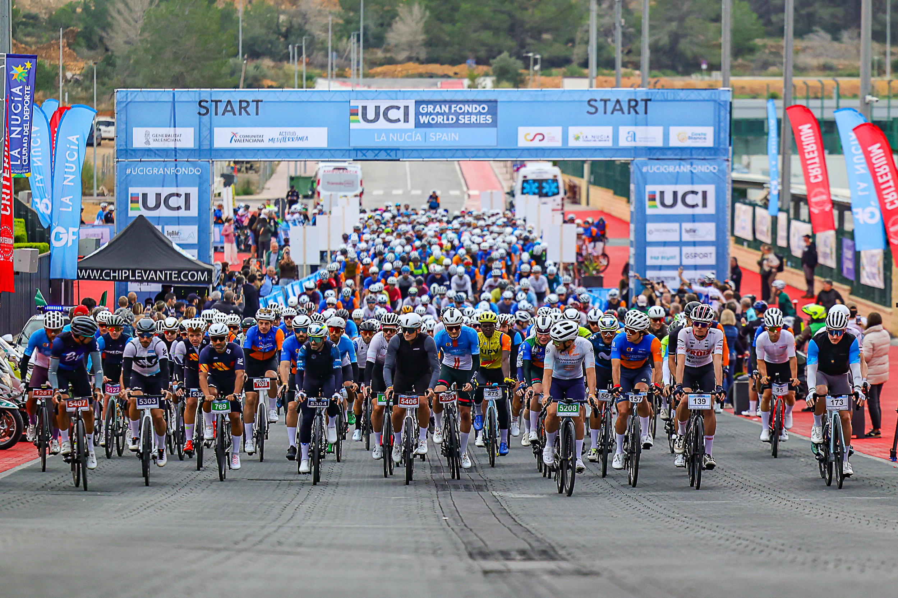
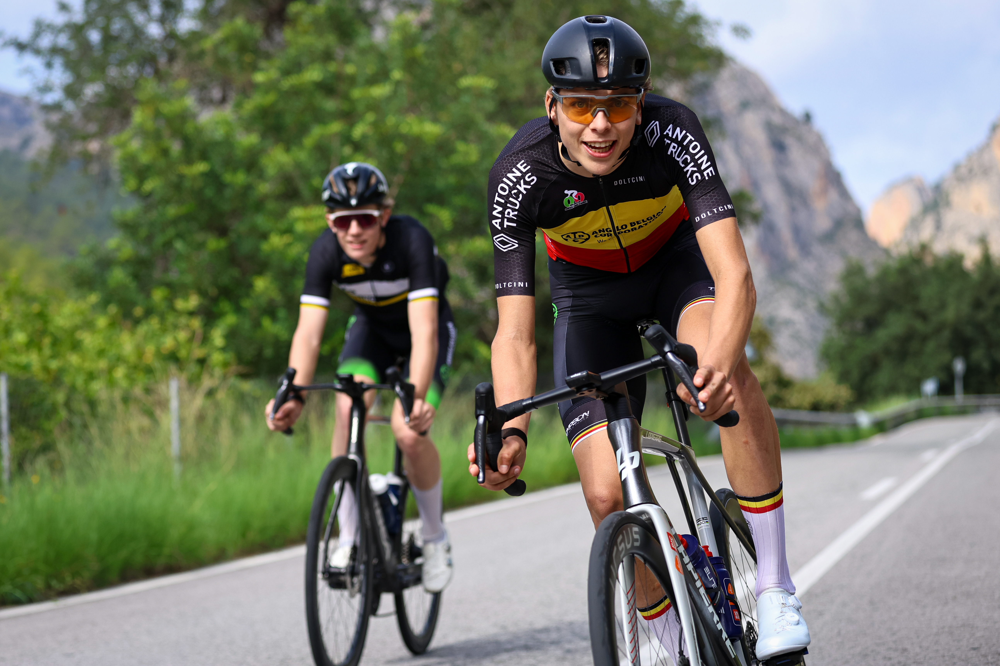

Nick Van der Lycke won the first UCI Gran Fondo World Series event in La Nucía after outsprinting Alejandro Valverde at the end of 131 kilometres on Saturday, 7 November.
The race began at 08:00 and served as a qualifier for the 2027 UCI Gran Fondo World Championships in France. Its mountain course was designed by five-time Tour de France winner Miguel Indurain.
A decisive sprint after the mountains
Van der Lycke and Valverde reached the finish together before the Dutch rider took the sprint. Guillaume Gerbaud finished third, ten seconds behind, followed by Jelle Vanendert and Michael Nydegger.


Milton leads the women’s race
Felicity Milton won the women’s race, with Dana Roziapa second at 1 minute 19 seconds and Joanna Kucinska third at 2 minutes 34 seconds. Joana Eslava and Ana Isabel Morales Visera completed the top five.
The route crossed the Sierra de Aitana and included the timed Coll de Rates climb before returning to La Nucía. The event had been rescheduled after a red weather alert forced the original edition to be called off hours before the start.
Image Media coverage
Reporting: IM News Editorial Desk
Coverage photographers: Sérgio Mendes; Paulo Nômade; Claudio João; Adilia Pinto; José Ramón Moreno
Date, route, results and rescheduling checked against official UCI Gran Fondo World Series reporting.